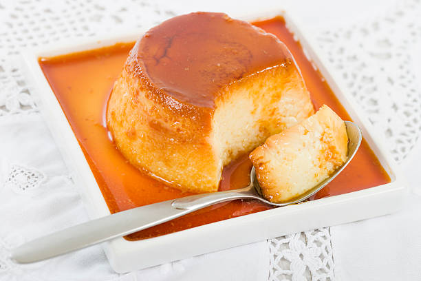

Spanish Flan

Description
Delicious Spanish flan, everyone will love it!
Ingredients
- 1 cup white sugar
- 3 eggs
- 1 (14 ounce) can sweetened condensed milk
- 1 (12 fluid ounce) can evaporated milk
- 1 tablespoon vanilla extract
Steps
- Preheat oven to 350 degrees F (175 degrees C).
- In a medium saucepan over medium-low heat, melt sugar until liquefied and golden in color. Carefully pour hot syrup into a 9 inch round glass baking dish, turning the dish to evenly coat the bottom and sides. Set aside.
- In a large bowl, beat eggs. Beat in condensed milk, evaporated milk and vanilla until smooth. Pour egg mixture into baking dish. Cover with aluminum foil.
- Bake in preheated oven 60 minutes. Let cool completely.
- To serve, carefully invert on serving plate with edges when completely cool.